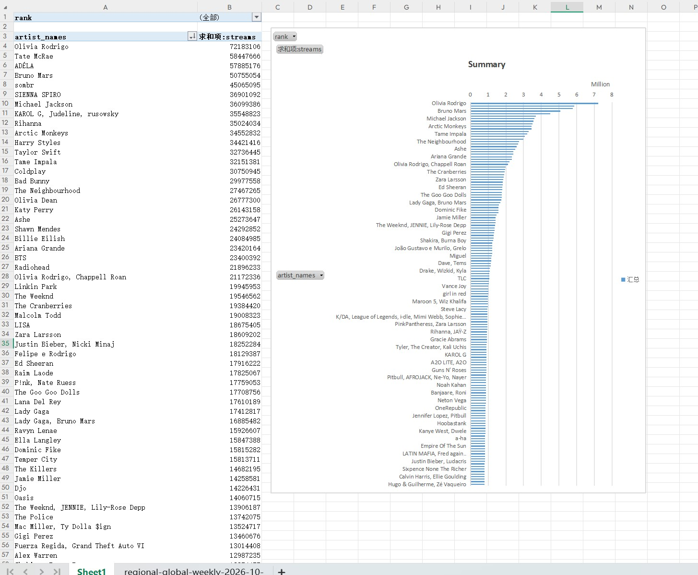
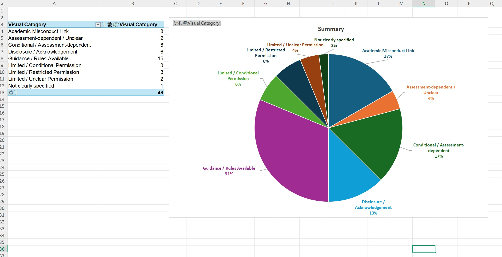

This week I learned how to visualize the data I collected, and I tried data visualization twice after class. The first time I used the Spotify data mentioned in the Minerva. After downloaded the global top 200 CSV data, I directly made a bar chart in Excel to visualize the streams of the artists from high to low. During this process, I learned that I need to choose different chart types for different types of data. For example, bar charts can better show the size relationship between data in the same category, and they are also very suitable for highlighting rankings.
The second time I visualized the data our group collected last week. Because the data sample was not large, I chose a pie chart to show the universities we selected about AI and academic integrity. The advantage of a pie chart is that when there are not many categories, it can use large blocks of color to show proportions very clearly.
The second time I visualized the data our group collected last week. Because the data sample was not large, I chose a pie chart to show the universities we selected about AI and academic integrity. The advantage of a pie chart is that when there are not many categories, it can use large blocks of color to show proportions very clearly.
When I visualized different data, I learned how to better use the data I collected. Visualization allows us to use data to achieve different goals.
When I visualized different data, I learned how to better use the data I collected. Visualization allows us to use data to achieve different goals.
I think the challenge I faced is the visual presentation. How to make the data more accurate and easier to understand is very important, and it even involves some knowledges about aesthetics.

